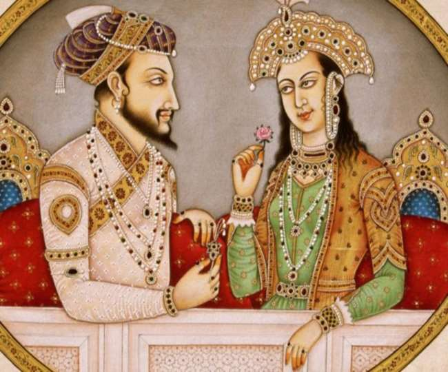

The Taj Mahal is an ivory-white marble mausoleum on the right bank of the Yamuna river in the Indian city of Agra. It was commissioned in 1632 by the Mughal emperor Shah Jahan to house the tomb of his favorite wife, Mumtaz Mahal. The Taj Mahal is widely considered to be one of the most beautiful buildings in the world and is recognized as a UNESCO World Heritage Site.
It was built by Mughal Emperor Shah Jahan in memory of his wife Mumtaz Mahal with construction starting in 1632 AD and completed in 1648 AD, with the mosque, the guest house and the main gateway on the south, the outer courtyard and its cloisters were added subsequently and completed in 1653 AD.
The Taj Mahal is considered to be the greatest architectural achievement in the whole range of Indo-Islamic architecture. Its recognised architectonic beauty has a rhythmic combination of solids and voids, concave and convex and light shadow; such as arches and domes further increases the aesthetic aspect. The colour combination of lush green scape reddish pathway and blue sky over it show cases the monument in ever changing tints and moods. The relief work in marble and inlay with precious and semi precious stones make it a monument apart.
The uniqueness of Taj Mahal lies in some truly remarkable innovations carried out by the horticulture planners and architects of Shah Jahan. One such genius planning is the placing of tomb at one end of the quadripartite garden rather than in the exact centre, which added rich depth and perspective to the distant view of the monument. It is also, one of the best examples of raised tomb variety. The tomb is further raised on a square platform with the four sides of the octagonal base of the minarets extended beyond the square at the corners. The top of the platform is reached through a lateral flight of steps provided in the centre of the southern side. The ground plan of the Taj Mahal is in perfect balance of composition, the octagonal tomb chamber in the centre, encompassed by the portal halls and the four corner rooms. The plan is repeated on the upper floor. The exterior of the tomb is square in plan, with chamfered corners. The large double storied domed chamber, which houses the cenotaphs of Mumtaz Mahal and Shah Jahan, is a perfect octagon in plan. The exquisite octagonal marble lattice screen encircling both cenotaphs is a piece of superb workmanship. It is highly polished and richly decorated with inlay work. The borders of the frames are inlaid with precious stones representing flowers executed with wonderful perfection. The hues and the shades of the stones used to make the leaves and the flowers appear almost real. The cenotaph of Mumtaz Mahal is in perfect centre of the tomb chamber, placed on a rectangular platform decorated with inlaid flower plant motifs. The cenotaph of Shah Jahan is greater than Mumtaz Mahal and installed more than thirty years later by the side of the latter on its west. The upper cenotaphs are only illusory and the real graves are in the lower tomb chamber (crypt), a practice adopted in the imperial Mughal tombs.
The four free-standing minarets at the corners of the platform added a hitherto unknown dimension to the Mughal architecture. The four minarets provide not only a kind of spatial reference to the monument but also give a three dimensional effect to the edifice.
The most impressive in the Taj Mahal complex next to the tomb, is the main gate which stands majestically in the centre of the southern wall of the forecourt. The gate is flanked on the north front by double arcade galleries. The garden in front of the galleries is subdivided into four quarters by two main walk-ways and each quarters in turn subdivided by the narrower cross-axial walkways, on the Timurid-Persian scheme of the walled in garden. The enclosure walls on the east and west have a pavilion at the centre.
The Taj Mahal is considered a symbol of eternal love and is often regarded as a testament to the beauty and perfection of Mughal architecture. The white marble used in its construction represents purity, while the surrounding gardens symbolize paradise.
The city of Taj, Agra, has its own airport that is around 7 km from the city center. Various Airlines operate flights to Agra during season time. For update information about flight please contact Tourist offices.

There is a good network of trains connecting Agra with the rest of the country. Apart from the main railway station of Agra Cantonment, there are other two stations also, that of Raja-ki-Mandi and Agra Fort. The main trains connecting Agra with Delhi are Palace on Wheels, Shatabdi, Rajdhani, Gatimaan and Taj Express. For train detail visit - https://www.irctc.co.in Call : 139

Agra is well connected to major cities in the country and is situated on the Golden Triangle of the Tourist Circuit (Delhi-Agra-Jaipur). It is connected to Delhi and Varanasi By NH-2, to Jaipur by NH-11 and Gwalior By NH-3. It is also connected to Delhi & Lucknow by Express ways. The major road distances are :
There are regular bus services from Agra to a number of important cities. The main bus stand of ISBT and Idgah have a number of buses running for Delhi, Jaipur, Mathura, Fatehpur-Sikri, etc.